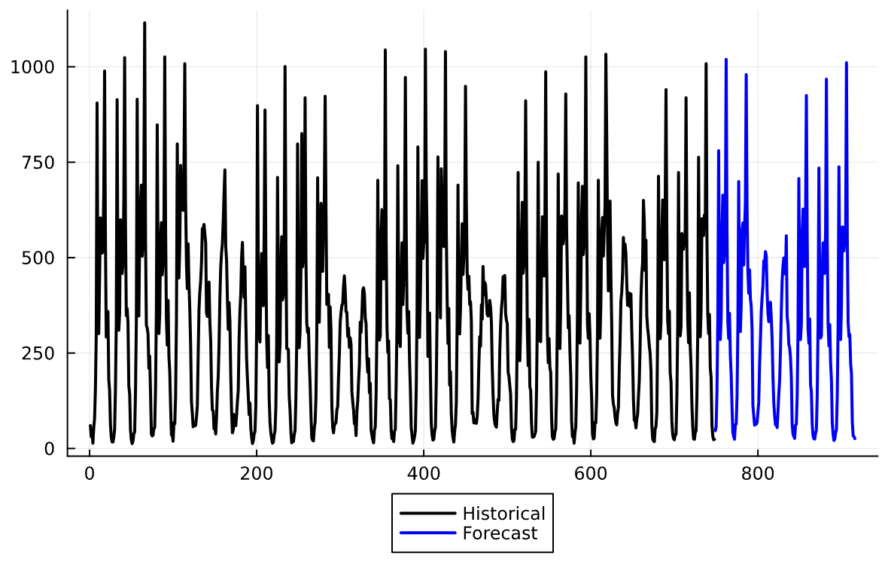

Examples
In this page, we present examples of applications and use cases for the package.
Univariate Forecast
Here we forecast the US airline passengers from 1949 to 1960.
using CSV, DataFrames, Plots, StateSpaceLearning
airp = CSV.File(StateSpaceLearning.AIR_PASSENGERS) |> DataFrame
log_air_passengers = log.(airp.passengers)
T = length(log_air_passengers)
steps_ahead = 30
model = StructuralModel(log_air_passengers)
fit!(model)
prediction_log = StateSpaceLearning.forecast(model, steps_ahead) # arguments are the output of the fitted model and number of steps ahead the user wants to forecast
prediction = exp.(prediction_log)
plot_point_forecast(airp.passengers, prediction)
N_scenarios = 1000
simulation = StateSpaceLearning.simulate(model, steps_ahead, N_scenarios) # arguments are the output of the fitted model, number of steps ahead the user wants to forecast and number of scenario paths
plot_scenarios(airp.passengers, exp.(simulation))

Forecasting intermittent series
The $StateSpaceLearning.jl$ package offers a convenient approach for managing intermittent series. Within the $simulate$ function, the $seasonal\_innovation\_simulation$ hyperparameter can be configured to ensure that the variability in the simulations also exhibits a seasonal pattern.
We first execute the code with the default parameters to highlight the importance of adapting the model to handle this type of time series effectively:
using CSV, DataFrames, Plots, StateSpaceLearning
solars = CSV.File(StateSpaceLearning.ARTIFICIAL_SOLARS) |> DataFrame
y = solars[!, "y1"]
T = length(y)
steps_ahead = 48
model = StructuralModel(y; freq_seasonal=24, slope="none", level="none", outlier=false)
fit!(model; penalize_initial_states=false)
simulation = StateSpaceLearning.simulate(model, steps_ahead, 100) #Gets a 12 steps ahead prediction
plot_scenarios(y, simulation)
Now we present the results by setting the $seasonal\_innovation\_simulation$ hyperparameter to 24 (given that it is a solar hourly time series).
using CSV, DataFrames, Plots, StateSpaceLearning
solars = CSV.File(StateSpaceLearning.ARTIFICIAL_SOLARS) |> DataFrame
y = solars[!, "y1"]
T = length(y)
steps_ahead = 48
model = StructuralModel(y; freq_seasonal=24, slope="none", level="none", outlier = false)
fit!(model; penalize_initial_states=false)
simulation = StateSpaceLearning.simulate(model, steps_ahead, 100; seasonal_innovation_simulation=24) #Gets a 12 steps ahead prediction
plot_scenarios(y, simulation)
Thus, the model has demonstrated its capability to effectively capture the intermittent nature of the solar time series, providing a more accurate representation of its underlying characteristics.
Forecasting with Multiple Seasonality
The $StateSpaceLearning.jl$ package handles multiple seasonality by passing parameter $freq\_seasonal$ as a vector of Int in the StructuralModel instantiation.
We first execute the code considering a single daily seasonality ($freq\_seasonal$=24) to highlight the importance of adapting the model to handle this type of time series effectively:
using CSV, DataFrames, Plots, StateSpaceLearning
solars = CSV.File(StateSpaceLearning.HOURLY_M4_EXAMPLE) |> DataFrame
y = solars[!, "values"]
T = length(y)
steps_ahead = 168
model = StructuralModel(y; freq_seasonal=168)
fit!(model)
prediction = StateSpaceLearning.forecast(model, steps_ahead) # arguments are the output of the fitted model and number of steps ahead the user wants to forecast
plot_point_forecast(y, prediction)
Note that the model successfully captured the daily seasonality but, as expected, was unable to capture the weekly seasonality. We now present the results after setting the freq\_seasonal hyperparameter to [24, 168], accounting for both daily and weekly seasonalities.
using CSV, DataFrames, Plots, StateSpaceLearning
solars = CSV.File(StateSpaceLearning.HOURLY_M4_EXAMPLE) |> DataFrame
y = solars[!, "values"]
T = length(y)
steps_ahead = 168
model = StructuralModel(y; freq_seasonal=[24, 168])
fit!(model)
prediction = StateSpaceLearning.forecast(model, steps_ahead) # arguments are the output of the fitted model and number of steps ahead the user wants to forecast
plot_point_forecast(y, prediction)
Note that the model was able to capture both seasonalities in this case.
Dynamic Exogenous Coefficients
Dynamic exogenous coefficients allow the effect of exogenous variables to vary over time with specific patterns (e.g., level, slope, seasonal or cyclical). This is configured through the dynamic_exog_coefs parameter in the StructuralModel constructor.
The dynamic_exog_coefs parameter accepts a vector of tuples, where each tuple contains:
- First element: A vector of an exogenous variable
- Second element: The name of the component that the exogenous variable will be associated with
- Third element (optional): For the seasonal component, the freqseasonal parameter and for cycle component, the cycleperiod parameter.
For example:
# Make X1's effect vary annually and X2's effect vary semi-annually
airp = CSV.File(StateSpaceLearning.AIR_PASSENGERS) |> DataFrame
y = log.(airp.passengers)
X = vcat(collect(1:90), collect(90.5:-0.5:64)) + (rand(144) .* 10)
y += X * -0.03
dynamic_coefs = [(X, "level")]
model = StructuralModel(y;
dynamic_exog_coefs=dynamic_coefs
)
fit!(model)
prediction = forecast(model, 30; dynamic_exog_coefs_forecasts = [collect(63.5:-0.5:49)])
plot_point_forecast(y, prediction)